Hypothesis Tests
Systematic procedure that gives us evidence to hang our hat on. Starting with a Null hypothesis (\(H_0\)) and an Alternative hypothesis (\(H_1\))
\[ \begin{align*} H_0:& \beta_1 = 0 \\ H_1:& \beta_1 \neq 0 \end{align*} \]
. . .
In the context of the wage regression:
\[ \text{Wage}_i = \beta_0 + \beta_1 \cdot \text{Education}_i + u_i \]
\(H_0\): Education has no effect on wage
\(H_1\): Education has an effect on wage
Possible outcomes
Within this structure, four possible outcomes exist:
. . .
1. We fail to reject the null hypothesis and the null is true.
. . .
Ex. Education has no effect on wage and, correctly, we fail to reject \(H_0\).
Possible outcomes
Within this structure, four possible outcomes exist:
1. We fail to reject the null hypothesis and the null is true.
2. We reject the null hypothesis and the null is false.
. . .
Ex. Education has an effect on wage and, correctly, we reject \(H_0\).
Possible outcomes
Within this structure, four possible outcomes exist:
1. We fail to reject the null hypothesis and the null is true.
2. We reject the null hypothesis and the null is false.
3. We reject the null hypothesis, but the null is actually true.
. . .
Ex. Education has no effect on wage, but we incorrectly reject \(H_0\).
This is an error. Defined as a Type I error.
Possible outcomes
Within this structure, four possible outcomes exist:
1. We fail to reject the null hypothesis and the null is true.
2. We reject the null hypothesis and the null is false.
3. We reject the null hypothesis, but the null is actually true.
4. We fail to reject the null hypothesis, but the null is actually false.
. . .
Ex. Education has an effect on wage, but we incorrectly fail to reject \(H_0\).
This is an error. Defined as a Type II error.
Possible outcomes
Within this structure, four possible outcomes exist:
1. We fail to reject the null hypothesis and the null is true.
2. We reject the null hypothesis and the null is false.
3. We reject the null hypothesis, but the null is actually true.1
4. We fail to reject the null hypothesis, but the null is actually false.2
Or… from the golden age of textbook illustrations
. . .

Hypothesis Tests
Goal: Make a statement about \(\beta_1\) using information on \(\hat{\beta}_1\).
. . .
\(\hat{\beta}_1\) is random—it could be anything, even if \(\beta_1 = 0\) is true.
- But if \(\beta_1 = 0\) is true, then \(\hat{\beta}_1\) is unlikely to take values far from zero.
- As the standard error shrinks, we are even less likely to observe “extreme” values of \(\hat{\beta}_1\) (assuming \(\beta_1 = 0\)).
. . .
Hypothesis testing takes extreme values of \(\hat{\beta}_1\) as evidence against the null hypothesis, but it will weight them by information about variance the estimated variance of \(\hat{\beta}_1\).
Hypothesis Tests
\(H_0\): \(\beta_1 = 0\)
\(H_1\): \(\beta \neq 0\)
To conduct the test, we calculate a \(t\)-statistic3:
\[ t = \frac{\hat{\beta}_1 - \beta_1^0}{\mathop{\hat{\text{SE}}} \left( \hat{\beta}_1 \right)} \]
Distributed by a \(t\)-distribution with \(n-2\) degrees of freedom4.
Hypothesis Testing
Normal distribution vs. \(t\) distribution
- A normal distribution has the same shape for any sample size.
- The shape of the t distribution depends the degrees of freedom.
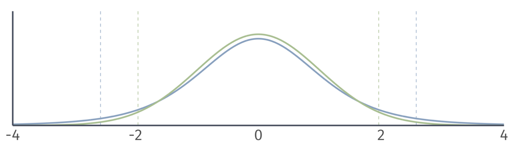
- Degrees of freedom = 5.
Hypothesis Testing
Normal distribution vs. \(t\) distribution
- A normal distribution has the same shape for any sample size.
- The shape of the t distribution depends the degrees of freedom.
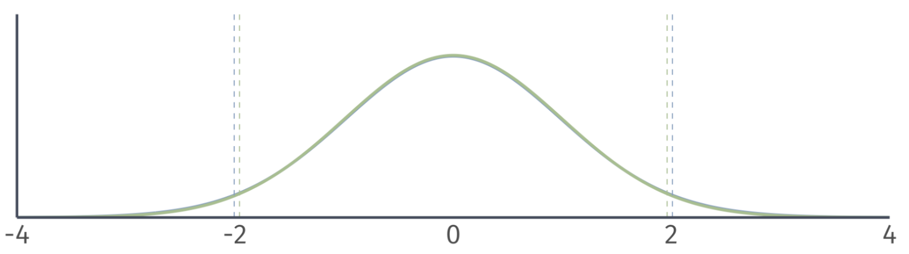
- Degrees of freedom = 50.
Hypothesis Testing
Normal distribution vs. \(t\) distribution
- A normal distribution has the same shape for any sample size.
- The shape of the t distribution depends the degrees of freedom.
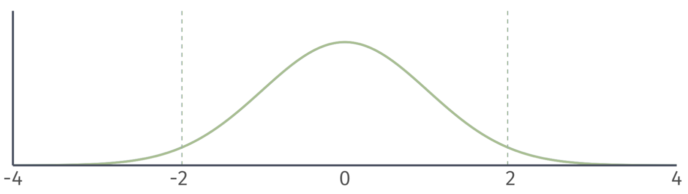
- Degrees of freedom = 500.
Hypothesis Testing
Two sided t Tests
To conduct a t test, compare the \(t\) statistic to the appropriate critical value of the t distribution.
- To find the critical value in a t table, we need the degrees of freedom and the significance level \(\alpha\).
Reject (\(\text{H}_0\)) at the \(\alpha \cdot 100\)-percent level if
\[ \left| t \right| = \left| \dfrac{\hat{\mu} - \mu_0}{\mathop{\text{SE}}(\hat{\mu})} \right| > t_\text{crit}. \]
Hypothesis Tests
Next, we use the \(\color{#434C5E}{t}\)-statistic to calculate a \(\color{#B48EAD}{p}\)-value.
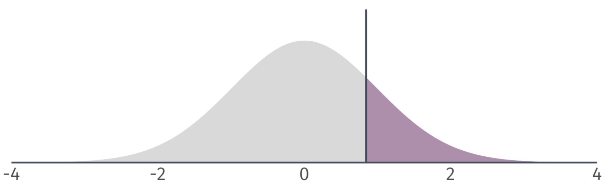
Describes the probability of seeing a \(\color{#434C5E}{t}\)-statistic as extreme as the one we observe if the null hypothesis is actually true.
. . .
But…we still need some benchmark to compare our \(\color{#B48EAD}{p}\)-value against.
Hypothesis Tests
We worry mostly about false positives, so we conduct hypothesis tests based on the probability of making a Type I error5.
. . .
How? We select a significance level, \(\color{#434C5E}{\alpha}\), that specifies our tolerance for false positives (i.e., the probability of Type I error we choose to live with).
. . .
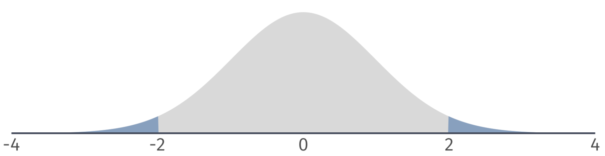
To visualize Type I and Type II, we can plot the sampling distributions of \(\hat{\beta}_1\) under the null and alternative hypotheses
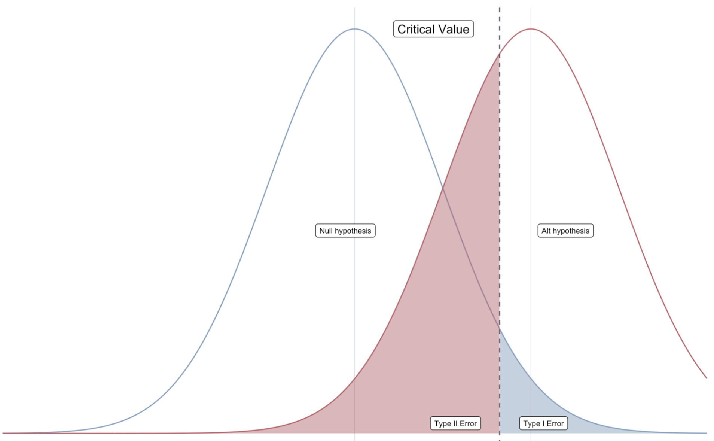
Hypothesis Tests
We then compare \(\color{#434C5E}{\alpha}\) to the \(\color{#B48EAD}{p}\)-value of our test.
If the \(\color{#B48EAD}{p}\)-value is less than \(\color{#434C5E}{\alpha}\), then we reject the null hypothesis at the \(\color{#434C5E}{\alpha}\cdot100\) percent level.
If the \(\color{#B48EAD}{p}\)-value is greater than \(\color{#434C5E}{\alpha}\), then we fail to reject the null hypothesis at the \(\color{#434C5E}{\alpha}\cdot100\) percent level.6
Ex. Are campus police associated with campus crime?
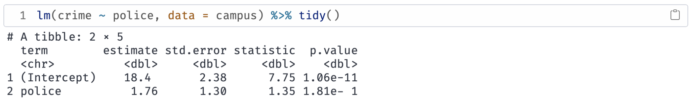
\(H_0\): \(\beta_\text{Police} = 0\)
\(H_1\): \(\beta_\text{Police} \neq 0\)
Significance level: \(\color{#434C5E}{\alpha} = 0.05\) (i.e., 5 percent test)
Test Condition: Reject \(H_0\) if \(p < \alpha\)
What is the \(\color{#B48EAD}{p}\)-value? \(p = 0.18\)
Do we reject the null hypothesis? No.
Hypothesis Tests
\(\color{#B48EAD}{p}\)-values are difficult to calculate by hand.
Alternative: Compare \(\color{#434C5E}{t}\)-statistic to critical values from the \({\color{#434C5E} t}\)-distribution.
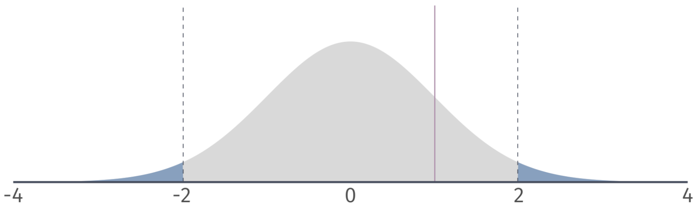
Hypothesis Tests
Notation: \(t_{1-\alpha/2, n-2}\) or \(t_\text{crit}\).
- Find in a \(t\)-table using \(\color{#434C5E}{\alpha}\) and \(n-2\) degrees of freedom.
Compare the the critical value to your \(t\)-statistic:
- If \(|t| > |t_{1-\alpha/2, n-2}|\), then reject the null.
- If \(|t| < |t_{1-\alpha/2, n-2}|\), then fail to reject the null.
Two-sided tests
Based on a critical value of \(t_{1-\alpha/2, n-2} = t_{0.975, 100} = 1.98\) we can identify a rejection region on the \(\color{#434C5E}{t}\)-distribution.
. . .
If our \(\color{#434C5E}{t}\)-statistic is in the rejection region, then we reject the null hypothesis at the 5 percent level.
Ex.7 \(\alpha = 0.05\)
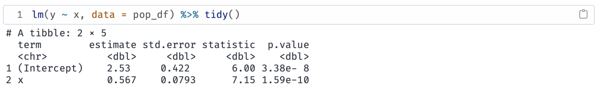
\(H_0\): \(\beta_1 = 0\)
\(H_1\): \(\beta_1 \neq 0\)
Notice that the \(\color{#434C5E}{t}\)-statistic is 7.15. The critical value is \(\color{#434C5E}{t_{\text{0.975, 28}}} = 2.05\).
Which implies that \(p < 0.05\). Therefore, we reject \(H_0\) at the 5% level.
Ex. Are campus police associated with campus crime? (\(\alpha = 0.1\))
\(H_0\): \(\beta_\text{Police} = 0\)
\(H_1\): \(\beta_\text{Police} \neq 0\)
The \(\color{#434C5E}{t \text{-stat}} = 1.35\). The critical value is \(\color{#434C5E}{t_{\text{0.95, 94}}} = 1.66\).
|\(\color{#434C5E}{t \text{-stat}}| < |\color{#434C5E}{t_{\text{crit}}}|\) implies that \(p > 0.05\). Therefore, we fail to reject \(H_0\) at the 10% level.
One-sided tests
We might be confident in a parameter being non-negative/non-positive.
One-sided tests assume that the parameter of interest is either greater than/less than \(H_0\).
Option 1 \(H_0\): \(\beta_1 = 0\) vs. \(H_1\): \(\beta_1 > 0\)
Option 2 \(H_0\): \(\beta_1 = 0\) vs. \(H_1\): \(\beta_1 < 0\)
. . .
If this assumption is reasonable, then our rejection region changes.
- Same \(\alpha\).
One-sided tests
Left-tailed: Based on a critical value of \(t_{1-\alpha, n-2} = t_{0.95, 100} = 1.66\), we can identify a rejection region on the \(t\)-distribution.
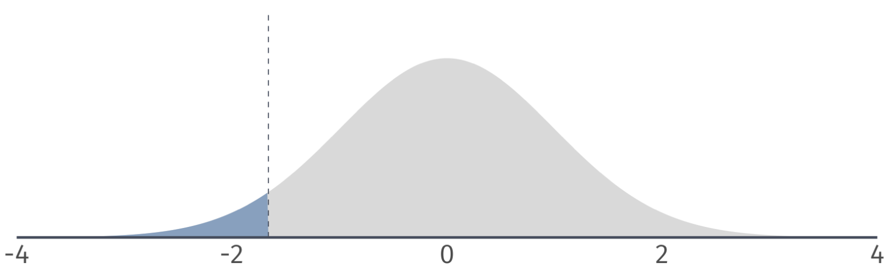
. . .
If our \(t\) statistic is in the rejection region, then we reject the null hypothesis at the 5 percent level.
One-sided tests
Right-tailed: Based on a critical value of \(t_{1-\alpha, n-2} = t_{0.95, 100} = 1.66\), we can identify a rejection region on the \(t\)-distribution.
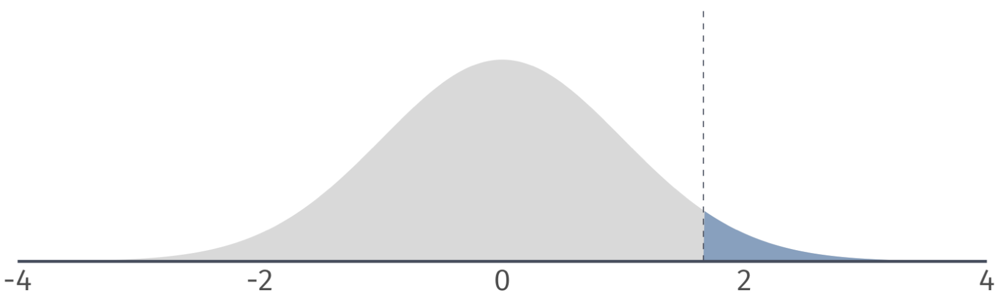
. . .
If our \(t\) statistic is in the rejection region, then we reject the null hypothesis at the 5 percent level.
Ex. Do campus police deter campus crime? (\(\alpha = 0.1\))
Suppose we rule out the possibility that police increase crime, but not that they have no effect.
\(H_0\): \(\beta_\text{Police} = 0\)
\(H_1\): \(\beta_\text{Police} < 0\)
Notice that the \(\color{#434C5E}{t \text{-stat}} = 1.35\). The critical value is \(\color{#434C5E}{t_{\text{0.9, 94}}} = 1.29\).
Which implies that \(p > 0.05\). Therefore, we reject \(H_0\) at the 5% level.
Footnotes
Type I error↩︎
Type II error↩︎
\(\beta_1^0\) is the value of \(\beta_1\) in our null hypothesis (e.g., \(\beta_1^0 = 0\)).↩︎
represents the number of independent values in a sample that are free to vary when estimating statistical parameters.↩︎
We reject the null hypothesis, but the null is actually true.↩︎
Note: Fail to reject \(\neq\) accept.↩︎
{{< fa brands r-project >}} defaults to testing hypotheses against the null hypothesis of zero.↩︎